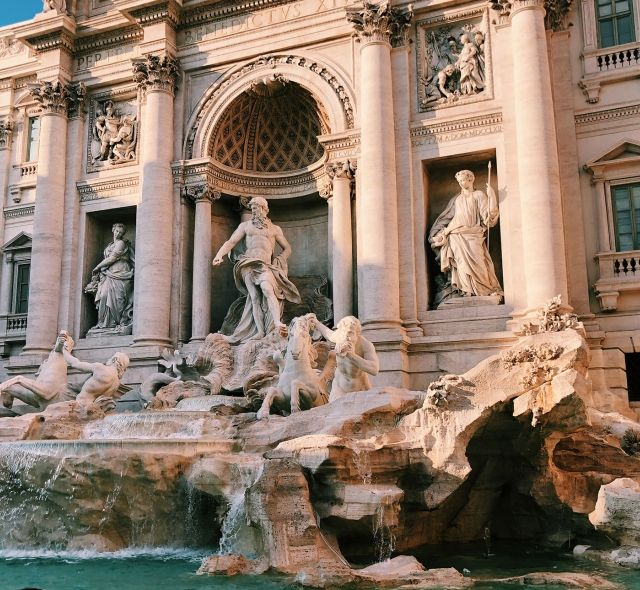
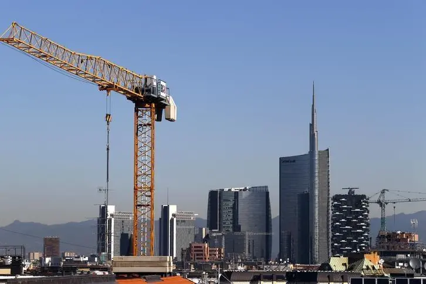
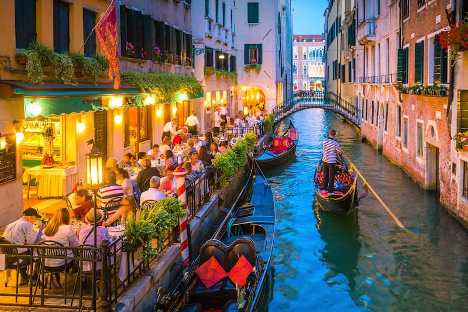
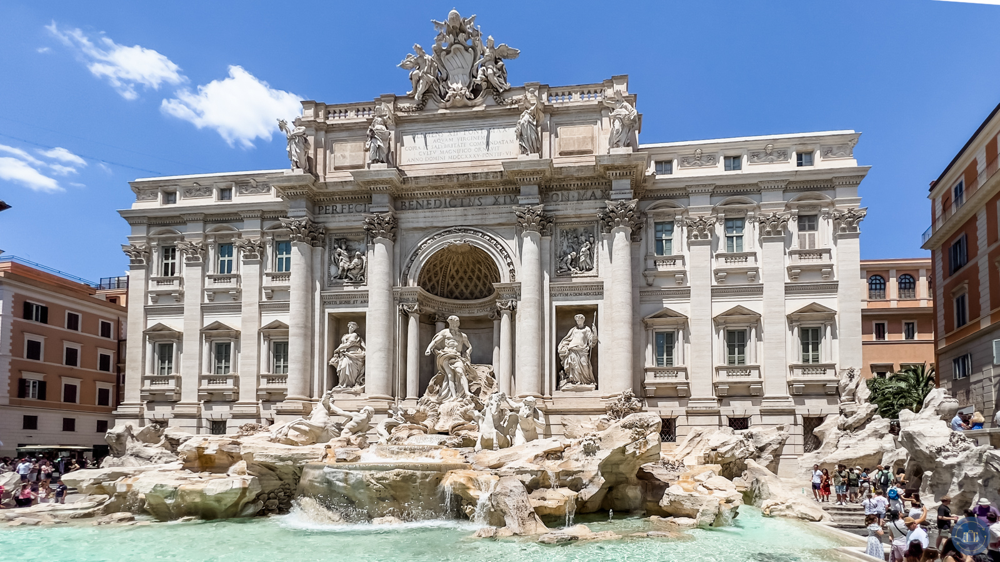
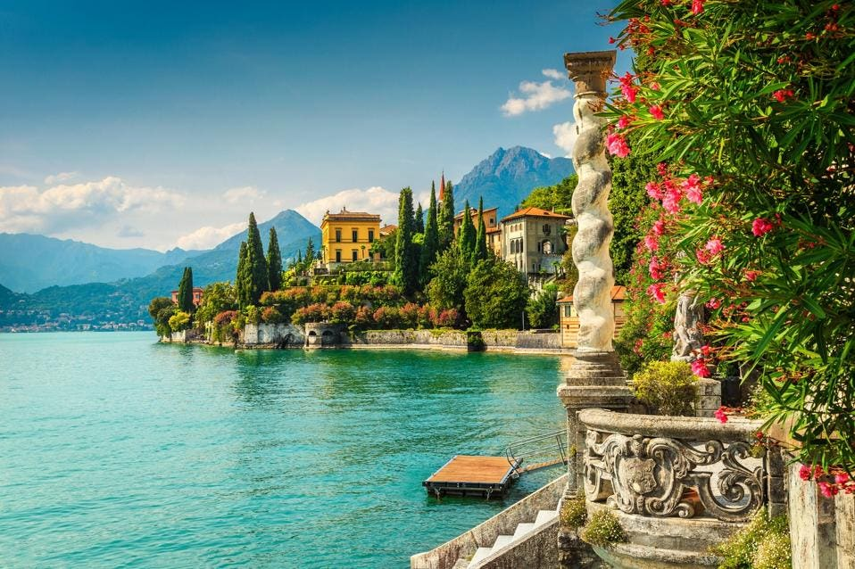
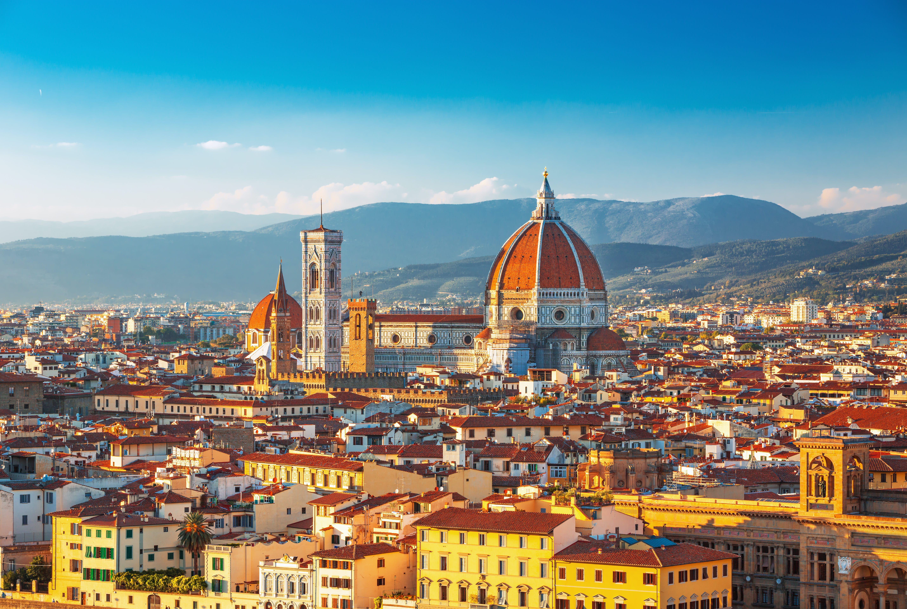
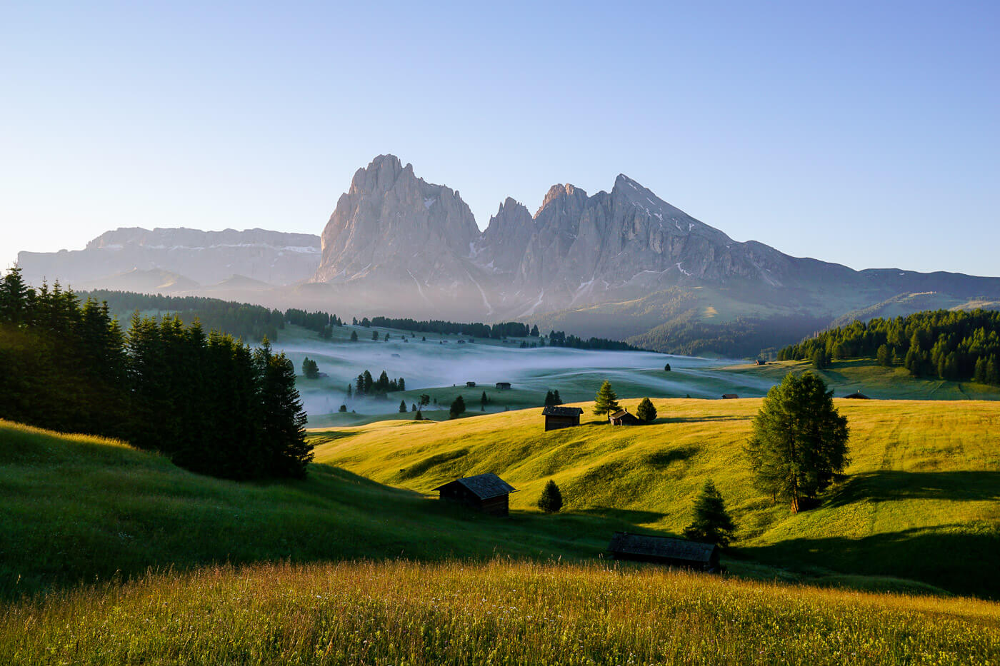

Italy is a south-central European country, whose boot-shaped borders extend into the Mediterranean Sea. The country’s historical cities, world-renowned cuisine and geographic beauty make it a popular destination for more than 40 million tourists each year. The nation is home to Mount Etna, Europe’s tallest and most active volcano, and houses two countries within its borders – the Vatican and San Marino.
Italian culture is the amalgamation of thousands of years of heritage and tradition, tracing its roots back to the Ancient Roman Empire and beyond. Italian culture is steeped in the arts, family, architecture, music and food. Home of the Roman Empire and its legendary figures such as Julius Caesar and Nero, it was also a major center of the Renaissance and the birthplace of fascism under Benito Mussolini. Culture on the Italian peninsula has flourished for centuries. Here is a brief overview of Italian customs and traditions as we know them today.
The economy of Italy is a highly developed social market economy. It is the third-largest national economy in the European Union, the second-largest manufacturing industry in Europe (7th-largest in the world), the 8th-largest economy in the world by nominal GDP, and the 12th-largest by GDP (PPP). - Wikipedia
There is lots of places to visit in Italy. Most popular are -
Venice is a city in northeastern Italy and the capital of the Veneto region. It is built on a group of 118 small islands that are separated by expanses of open water and by canals; portions of the city are linked by over 400 bridges. The islands are in the shallow Venetian Lagoon, an enclosed bay lying between the mouths of the Po and the Piave rivers.
Rome was called the “Eternal City” by the ancient Romans because they believed that no matter what happened in the rest of the world, the city of Rome would always remain standing. Exploring the city center by foot surrounded by glorious monuments and colossal remains takes you back in time to the “glory that was Rome”.
A gorgeous spot that’s a convenient day trip from Milan, Lake Como recently earned fame as home to Hollywood star George Clooney. But celeb-spotting aside, it’s known for jaw-dropping natural beauty, elegant old villas—and the scenic towns surrounding the lake. Check out Varenna, Bellagio, and Menaggio, which offer great views, historic churches, and water-based activities such as ferries and passenger-only boats.
There’s no better place for Renaissance art and architecture than Florence—from the Galleria dell’Accademia (home to Michelangelo’s David) to the cathedrals and arches that make up the Piazzale Michelangelo. But just beyond the main sights, you’ll find some of the city’s off-the-beaten-path gems, with (bonus) way less crowds. San Miniato al Monte is worth the climb for the frescoes and unbeatable views. Oltrarno, just across the river, offers plenty of vintage shops, boutiques, and cool cafes. When in doubt, do as the locals do: Post up in a piazza with a plate of fresh tagliatelle and a glass of Chianti and watch the city go by.
The Dolomites, also known as the Dolomite Mountains, Dolomite Alps or Dolomitic Alps, are a mountain range in northeastern Italy. They form part of the Southern Limestone Alps and extend from the River Adige in the west to the Piave Valley (Pieve di Cadore) in the east. The northern and southern borders are defined by the Puster Valley and the Sugana Valley (Italian: Valsugana). The Dolomites are in the regions of Veneto, Trentino-Alto Adige/Südtirol and Friuli Venezia Giulia, covering an area shared between the provinces of Belluno, Vicenza, Verona, Trentino, South Tyrol, Udine and Pordenone.
